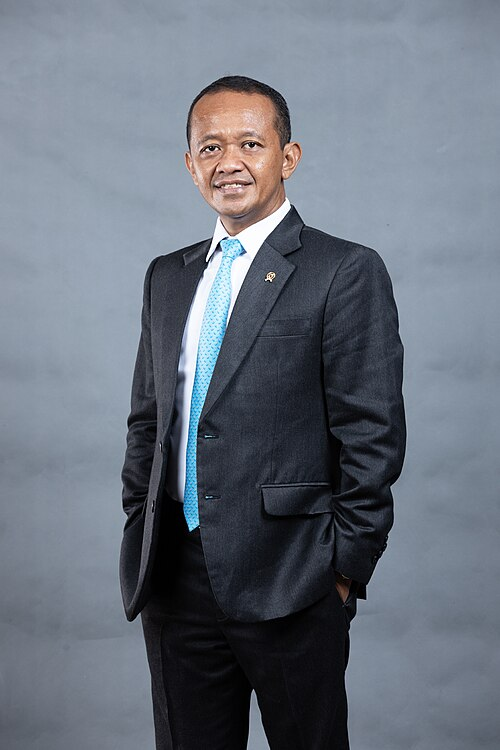

Menteri Energi dan Sumber Daya Mineral (ESDM) RI & Tokoh Pengusaha Nasional
Bahlil Lahadalia lahir di Banda, Maluku Tengah pada 7 Agustus 1976. Perjalanan hidupnya dimulai dari perjuangan yang sangat gigih dari tanah Papua. Ia pernah melakoni berbagai pekerjaan dari bawah, mulai dari sopir angkot, penjual kue, hingga berhasil tumbuh menjadi pengusaha sukses dan memimpin HIPMI (Himpunan Pengusaha Muda Indonesia).
Dengan filosofi kerja keras dan pengalaman nyata di lapangan, beliau dipercaya mengemban amanah strategis di pemerintahan sebagai Kepala BKPM, Menteri Investasi, hingga Menteri ESDM Republik Indonesia.
Lihat Rekam Jejak Lengkap (Creative CV)Mendorong peningkatan realisasi investasi nasional dan konsisten mengawal program hilirisasi sumber daya alam secara berkelanjutan demi nilai tambah ekonomi dalam negeri.
Memimpin organisasi pengusaha muda se-Indonesia dan aktif mendorong pemerataan pembangunan ekonomi serta penciptaan wirausaha baru di berbagai daerah.
Mengawal kebijakan kedaulatan energi nasional, perbaikan tata kelola tambang, serta transisi menuju pemanfaatan energi baru terbarukan.